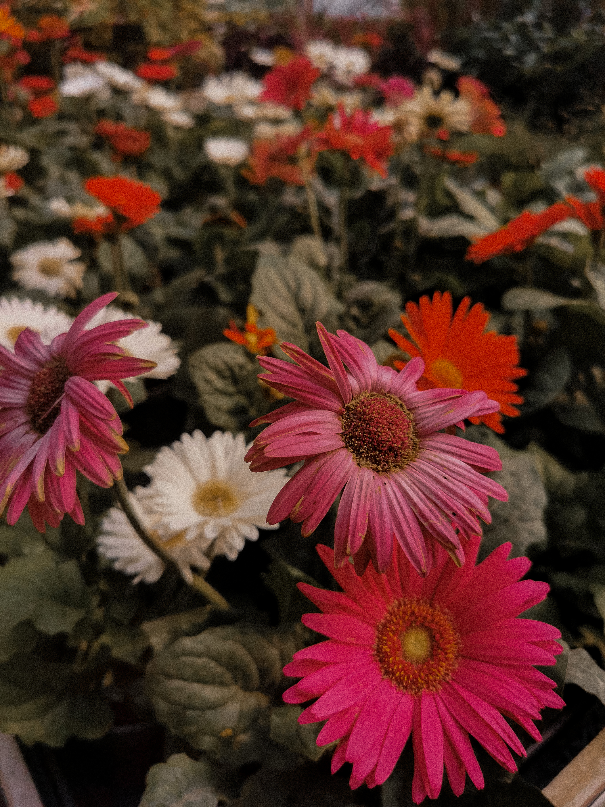
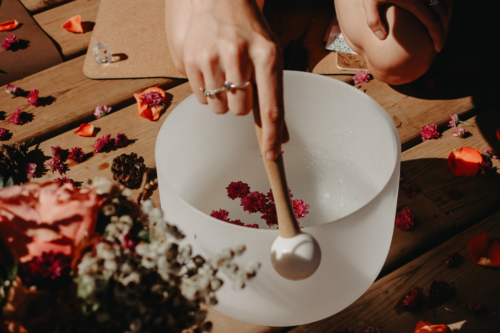

Canmore, Alberta · Canada
2020

The dream that started everything.
I had never really travelled. Not properly. I had a life in Ontario — comfortable, familiar, a little small. And then I had a dream about mountains. Not a metaphor. An actual dream. I woke up and my friend had tagged me in a listing: a beautiful pet-friendly home in Canmore. The Rockies. I had never been.
I had just finished my yoga teacher training. Something in me was cracking open in the way that happens after a period of intensive learning — where you suddenly see your life from the outside and it looks different than it did before. I packed my car that week and drove. Dogs in the back. No real plan.
Canmore did something to me that I still cannot fully explain. The mountains are enormous in a way that is not just visual — you feel small inside them, and that smallness is somehow exactly what I needed. I had been anxious my whole life, always trying to make myself bigger than the fear. There, I just stopped trying. I was small. The mountains were enormous. Everything else sorted itself out.
I found myself there. That is the only honest way to say it.
Ontario · East Coast Canada · The Road
2020 – 2021
The van years.
I came back from Canmore and bought a van. I do not know why that felt like the obvious next step, but it did. I converted it, badly at first and then better, and spent the next while living in it — first back in Ontario, then east to the Atlantic coast, then eventually west again to Vancouver Island.
There is a particular freedom that comes with owning nothing that can't fit in a van. A lightness. But also a particular loneliness, which nobody tells you about before you do it. You meet people everywhere and leave them everywhere. You are perpetually arriving somewhere and perpetually leaving it.
I loved it anyway. The east coast of Canada is genuinely one of the most beautiful places I have ever been — the light is different there, softer, the people are warmer in a way that feels old and genuine. I did not stay long enough.
Vancouver Island · Bowen Island · Tofino · BC
2021 – 2022
The west coast, and my first retreat away from home.
Vancouver Island felt like a different country. The rainforest, the ocean on both sides, the mountains in the distance. I lived in a trailer in Tofino for a few months — which sounds romantic and was also genuinely cold and occasionally chaotic. I fell in love with that coast in a way that has never fully left me.
The Bowen Island retreat was a turning point. I had been facilitating yoga and workshops at home, in familiar rooms with familiar people. Bowen was the first time I held space somewhere entirely new, with people I did not know, in a setting I had never been in before. It was terrifying in the best way. It worked. Something solidified in me — a knowing that this is what I am supposed to do, not just in safe conditions but properly, in the world.
I sold the van eventually. Not without grief. It had been my home for longer than I expected. But I had outgrown what it could hold.
Ontario · Nicaragua · Costa Rica · Portugal
2022 – 2023

The year everything changed.
I came back to Ontario for a season to help care for my grandma. She was getting older and needed more support, and there was nowhere else I wanted to be. We had a particular closeness — the kind that does not need explanation. I would sit with her and feel like I was exactly where I was supposed to be, even as the rest of my life felt uncertain.
Between visits I kept moving. Nicaragua for the first retreat — the first time I flew somewhere to host, with a partner, for a group of women I had never met. It was the most alive I had felt in years. The retreat worked. The community formed. I understood then what I was building toward.
Costa Rica briefly. Then three months in Portugal — mostly Lisbon, wandering and writing and thinking. I got very clear in Portugal in a way that had been evading me for years. About what I wanted. About Mindful Earth. About the kind of life I was actually trying to build, rather than the one I had inherited the idea of.
I came home from Portugal with a kind of quiet certainty. I went straight to my grandma.
Three weeks later she died.
I had known it was coming and it undid me anyway. She was my anchor in a way I only fully understood after she was gone. The grief was enormous — is enormous, still. I lost myself in it in a way I had not lost myself in anything before. And then, because I did not know what else to do, I got on a plane to Greece.
Greece · Ireland · England
2023
The sailing trip, and learning to hold the grief.
Greece was a sailing trip with friends. I went because I had said yes before my grandma died and I did not know how to unsay it, and also because something in me understood that sitting still with the grief was not yet something I could do. The sailing helped. The sea does something to grief — it gives it space, makes it less close, lets it exist alongside the wind and the light and the moving.
Ireland was quiet and green and I needed both of those things. England came after — first briefly, then again a month later for my holosomatic bodywork facilitator training. That training was another turning point. The work of it cracked something open that the grief had sealed. I came out of it different. More myself, not less, despite everything.
I went back to Canmore for a month after the training. Back to where it started. The mountains had the same effect they always have — they made me small in the best way. Then Banff for a month. I was trying to find my footing again. Slowly, I did.
Colombia · Costa Rica · Nicaragua · El Salvador · Guatemala · Mexico
2023 – 2024

The Latin America loop, and falling in love with Ometepe.
Colombia first. Medellín and then the coffee region — a country that gets under your skin in a way that is hard to prepare for. The warmth, the food, the particular combination of beauty and complexity that makes it unlike anywhere else I have been.
Costa Rica briefly, then Nicaragua for the second retreat. By then I knew what I was doing. The first one had been exhilarating and terrifying. The second had the ease of something that has found its form. The women came, the community formed, something genuine happened. I keep coming back to Nicaragua. I think I always will.
Ometepe island deserves its own paragraph. It is a volcanic island in the middle of Lake Nicaragua, and it is one of the most genuinely strange and beautiful places I have encountered. Something is different there — the air, the quality of the silence, the sense of being somewhere that has its own rules. I did not stay long enough. I will go back.
El Salvador, Guatemala, Mexico. Each one distinct. Each one generous in different ways. I was moving and learning and slowly, over those months, starting to feel like myself again after the grief. Not the same self. A different one — quieter, more certain about some things, more comfortable with uncertainty about others.
London, UK — and beyond
2024 – present

Landing in London. Still landing, honestly.
I moved to the UK because my partner was here. That sounds simple. It was not simple. After six years of moving when I wanted and leaving when I needed and being accountable to no fixed address, choosing a city — choosing a person, choosing to stay — was one of the stranger things I have done.
London was a lot, initially. It is a lot. It is enormous and fast and not particularly interested in you, which can feel cold until you find the pockets of warmth inside it, and then it feels like something else entirely. I am still finding those pockets. My dog helps. He reminds me to walk in parks and notice things.
Since being here I have been to Paris, Amsterdam, Italy for a ski trip, Portugal again (Faro and Lagos, which I love), and most recently Ibiza — for the Sunshine Souls retreat, doing photography and content. That felt like the beginning of something. The retreat photographer version of the work, alongside the practitioner version. Both are mine.
I hope London can be the home base that finally gives me the stability to travel properly — not running, but choosing. Greece this summer, probably. The list is long. The energy is different now than it was in 2020 when I drove away from everything I knew. I know more about what I am looking for. I know more about what I need to come back to.
One of my biggest dreams is still to have retreat venues in different countries. Places I have visited enough times to love and love enough to want to share. I am working toward that, one retreat at a time. This journal is the map of how I got here. It is far from finished.
What's next
Greece · More of Europe · Wherever the retreats take me.
Follow along on Instagram for real-time updates.